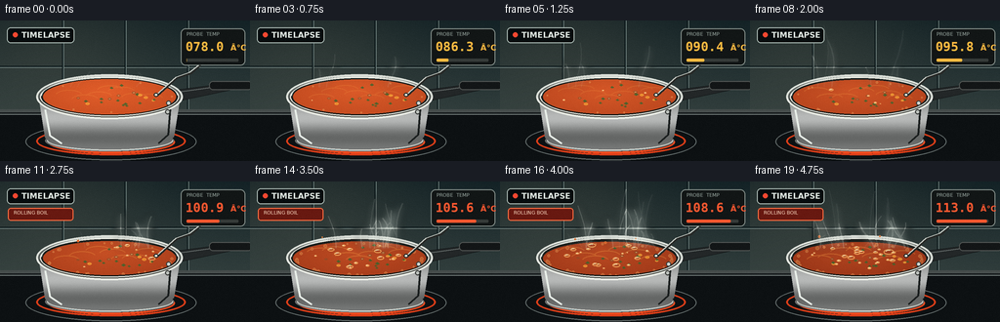
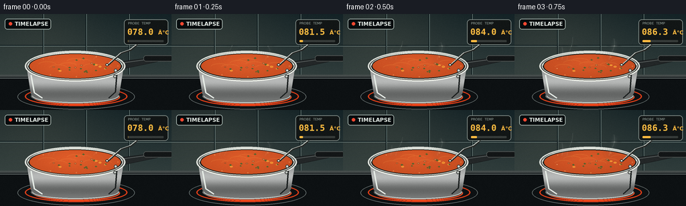

CODING AGENTS AS PIXEL WORLD MODELS
traex/GPT-5.6-Sol · phygen_108
点击播放 · 原生 RGB 像素
逐轮保存的候选
回放视频、检查图与代码变化。
每份候选均可单独播放。实际图片检查记录在下方工具轨迹中。
候选 01播放与检查图
点击播放 · 原生 RGB 像素


展开代码变化
--- 上一保存版本
+++ 本次保存版本
@@ -0,0 +1,250 @@
+from pathlib import Path
+import math, random
+import numpy as np
+from PIL import Image, ImageDraw, ImageFilter, ImageFont
+import artifact_io
+
+CASE_DIR = Path(__file__).resolve().parent
+W, H, N = 256, 144, 20
+S = 3
+random.seed(108)
+
+try:
+ FONT_B = ImageFont.truetype('/usr/share/fonts/truetype/dejavu/DejaVuSans-Bold.ttf', 8*S)
+ FONT_S = ImageFont.truetype('/usr/share/fonts/truetype/dejavu/DejaVuSans.ttf', 5*S)
+ FONT_D = ImageFont.truetype('/usr/share/fonts/truetype/dejavu/DejaVuSansMono-Bold.ttf', 13*S)
+except Exception:
+ FONT_B = FONT_S = FONT_D = ImageFont.load_default()
+
+def box(b): return tuple(int(v*S) for v in b)
+def pts(p): return [(int(x*S), int(y*S)) for x,y in p]
+def bezier(p0,p1,p2,p3,n=30):
+ out=[]
+ for q in np.linspace(0,1,n):
+ a=(1-q)**3; b=3*(1-q)**2*q; c=3*(1-q)*q*q; d=q**3
+ out.append(((a*p0[0]+b*p1[0]+c*p2[0]+d*p3[0])*S,
+ (a*p0[1]+b*p1[1]+c*p2[1]+d*p3[1])*S))
+ return out
+
+def ellipse_mask(b):
+ m=Image.new('L',(W*S,H*S)); ImageDraw.Draw(m).ellipse(box(b),fill=255)
+ return m
+
+# Stable soup ingredients
+ingredients=[]
+for i in range(20):
+ ang=random.uniform(0,2*math.pi); rr=math.sqrt(random.random())*.85
+ x=112+rr*61*math.cos(ang); y=77+rr*14*math.sin(ang)
+ ingredients.append((x,y,random.choice(['carrot','herb','bean','herb']),random.uniform(0,6.28),random.uniform(.7,1.2)))
+
+# Bubble events become much more frequent after boiling begins.
+bubbles=[]
+for start in range(3,20):
+ count = 1 if start < 8 else (2 if start < 11 else 5 + (start-11)//2)
+ for _ in range(count):
+ ang=random.uniform(0,2*math.pi); rr=math.sqrt(random.random())*.87
+ bubbles.append(dict(start=start, dur=random.choice([2,3,3,4]),
+ x=112+rr*60*math.cos(ang), y=77+rr*14*math.sin(ang),
+ r=random.uniform(2.0,5.8) * (0.7 if start<10 else 1), phase=random.random()*.2))
+
+# Steam births: sparse below 100 C, dense above it.
+wisps=[]
+for i in range(30):
+ if i<4: birth=random.randint(0,7)
+ elif i<10: birth=random.randint(7,12)
+ else: birth=random.randint(10,19)
+ wisps.append(dict(birth=birth, duration=random.randint(6,10), x=random.uniform(65,161),
+ sway=random.uniform(-13,13), height=random.uniform(37,65), width=random.uniform(1.2,2.4), seed=random.uniform(0,6.28)))
+
+def base_scene():
+ # softly lit tiled kitchen wall and dark cooktop
+ hh,ww=H*S,W*S
+ yy=np.arange(hh)[:,None]
+ arr=np.empty((hh,ww,3),dtype=np.float32)
+ top=np.array([19,34,38]); bot=np.array([48,61,60])
+ a=np.minimum(yy/(92*S),1.0)[...,None]
+ arr[:]=top*(1-a)+bot*a
+ # warm light from upper-left
+ Y,X=np.mgrid[0:hh,0:ww]
+ glow=np.exp(-(((X-58*S)/(115*S))**2+((Y-15*S)/(80*S))**2))*19
+ arr += glow[...,None]*np.array([1.0,.78,.52])
+ im=Image.fromarray(np.uint8(np.clip(arr,0,255)),'RGB').convert('RGBA')
+ d=ImageDraw.Draw(im,'RGBA')
+ # tile grout
+ d.line([(0,47*S),(W*S,47*S)],fill=(5,17,20,105),width=S)
+ d.line([(0,48*S),(W*S,48*S)],fill=(106,122,119,22),width=S)
+ for x in [64,128,192]:
+ d.line([(x*S,0),(x*S,92*S)],fill=(5,17,20,80),width=S)
+ d.line([((x+1)*S,0),((x+1)*S,92*S)],fill=(104,121,118,18),width=S)
+ # backsplash/cooktop seam and glass hob
+ d.rectangle(box((0,91,256,144)),fill=(13,17,19,255))
+ d.rectangle(box((0,91,256,94)),fill=(70,77,76,255))
+ d.line(pts([(0,96),(256,96)]),fill=(116,125,123,35),width=S)
+ d.ellipse(box((26,105,201,143)),outline=(103,112,111,44),width=S)
+ d.ellipse(box((37,109,190,138)),outline=(219,62,25,80),width=2*S)
+ d.ellipse(box((49,113,179,136)),fill=(37,19,16,210),outline=(244,76,31,115),width=2*S)
+ return im
+
+def draw_pan(im, frame, temp, intensity):
+ d=ImageDraw.Draw(im,'RGBA')
+ # Long handle, behind vessel, with metal collar and matte grip
+ d.polygon(pts([(173,72),(250,62),(255,67),(180,83)]),fill=(35,39,40,255),outline=(7,9,10,255))
+ d.line(pts([(184,73),(249,64)]),fill=(110,117,115,105),width=S)
+ d.rounded_rectangle(box((214,62,258,71)),radius=4*S,fill=(19,22,23,255),outline=(80,84,82,180),width=S)
+ d.ellipse(box((169,69,185,85)),fill=(115,119,115,255),outline=(28,30,30,255),width=S)
+ # Pan body mask with brushed stainless gradient
+ body_mask=Image.new('L',im.size); md=ImageDraw.Draw(body_mask)
+ md.polygon(pts([(39,75),(185,75),(178,119),(166,129),(58,129),(46,120)]),fill=255)
+ md.ellipse(box((46,112,178,134)),fill=255)
+ bh,bw=H*S,W*S
+ y=np.arange(bh)[:,None]
+ shade=84 + 80*np.exp(-((y-91*S)/(25*S))**2) + 18*np.sin(y/(5*S))
+ metal=np.zeros((bh,bw,4),dtype=np.uint8)
+ metal[...,0]=np.clip(shade+13,0,255); metal[...,1]=np.clip(shade+15,0,255); metal[...,2]=np.clip(shade+14,0,255); metal[...,3]=255
+ body=Image.fromarray(metal,'RGBA'); body.putalpha(body_mask)
+ im.alpha_composite(body)
+ d=ImageDraw.Draw(im,'RGBA')
+ d.line(pts([(46,91),(51,118),(63,126)]),fill=(232,238,232,120),width=2*S)
+ d.line(pts([(174,91),(172,117),(162,126)]),fill=(26,30,30,115),width=2*S)
+ d.arc(box((48,112,177,133)),0,180,fill=(224,228,221,120),width=S)
+ # Outer rim and dark inner lip
+ d.ellipse(box((37,55,187,101)),fill=(91,97,94,255),outline=(221,225,218,255),width=2*S)
+ d.ellipse(box((41,58,183,98)),fill=(27,31,29,255),outline=(248,249,239,145),width=S)
+ # Soup surface slowly reduces and darkens
+ lift=2.2*(frame/(N-1))
+ sb=(44,60+lift,180,96-lift*.15)
+ soup_mask=ellipse_mask(sb)
+ hh,ww=H*S,W*S; Y,X=np.mgrid[0:hh,0:ww]
+ p=frame/(N-1)
+ center=np.array([202-48*p,79-25*p,34-10*p],float)
+ radial=np.sqrt(((X-108*S)/(78*S))**2+((Y-73*S)/(28*S))**2)
+ light=np.clip(1-radial,0,1)*24
+ soup=np.zeros((hh,ww,4),dtype=np.uint8)
+ soup[...,:3]=np.clip(center+light[...,None]*np.array([1,.64,.35]),0,255)
+ soup[...,3]=255
+ si=Image.fromarray(soup,'RGBA'); si.putalpha(soup_mask); im.alpha_composite(si)
+ # surface texture, ingredients and convection streaks clipped into a layer
+ surf=Image.new('RGBA',im.size,(0,0,0,0)); sd=ImageDraw.Draw(surf,'RGBA')
+ # oily highlights and rolling convection arcs
+ for k in range(7):
+ cx=69+k*14 + 3*math.sin(frame*.48+k)
+ cy=75+5*math.sin(k*1.4+frame*.72)
+ sd.arc(box((cx-12,cy-4,cx+15,cy+6)),190,345,fill=(255,171,73,40+int(35*intensity)),width=S)
+ # edge simmer foam grows with heat
+ edge_count=int(5+24*intensity)
+ for j in range(edge_count):
+ a=2*math.pi*j/max(edge_count,1)+.35*math.sin(j*2.2)
+ x=112+64*math.cos(a); y=(78+lift)+16*math.sin(a)
+ r=.7+1.1*intensity*(.5+.5*math.sin(j*3.7))
+ sd.ellipse(box((x-r,y-r,x+r,y+r)),fill=(245,166,85,80),outline=(255,209,133,130),width=max(1,S//2))
+ # recognizable vegetables travel in convection currents
+ for i,(x0,y0,kind,ph,sc) in enumerate(ingredients):
+ amp=.8+2.8*intensity
+ x=x0+amp*math.sin(frame*.48+ph)
+ y=y0+amp*.36*math.cos(frame*.67+ph)
+ if kind=='carrot':
+ r=2.0*sc; sd.ellipse(box((x-r,y-r*.55,x+r,y+r*.55)),fill=(242,124,34,200),outline=(255,189,64,175),width=S)
+ elif kind=='bean':
+ r=1.8*sc; sd.ellipse(box((x-r,y-r*.55,x+r,y+r*.55)),fill=(248,204,133,205),outline=(126,79,42,130),width=S)
+ else:
+ sd.polygon(pts([(x-2*sc,y),(x,y-1.4*sc),(x+2.1*sc,y+.2),(x,y+1.2*sc)]),fill=(52,102,46,205))
+ # active rising bubbles
+ for b in bubbles:
+ age=frame-b['start']+b['phase']
+ if age < 0 or age > b['dur']: continue
+ q=age/b['dur']; r=b['r']*(.35+.9*q)
+ # bubble swells, then ring opens as it bursts
+ x=b['x']+1.2*math.sin(frame+b['x']); y=b['y']-.5*q
+ if q < .78:
+ sd.ellipse(box((x-r,y-r*.48,x+r,y+r*.48)),fill=(112,38,18,40),outline=(255,185,102,205),width=S)
+ sd.arc(box((x-r*.7,y-r*.38,x+r*.7,y+r*.35)),195,295,fill=(255,239,187,220),width=S)
+ else:
+ sd.arc(box((x-r,y-r*.45,x+r,y+r*.45)),5,145,fill=(255,191,102,160),width=S)
+ sd.arc(box((x-r,y-r*.45,x+r,y+r*.45)),190,320,fill=(255,151,70,130),width=S)
+ surf.putalpha(Image.composite(surf.getchannel('A'),Image.new('L',im.size),soup_mask))
+ im.alpha_composite(surf)
+ d=ImageDraw.Draw(im,'RGBA')
+ # front rim sits above liquid
+ d.arc(box((37,55,187,101)),2,178,fill=(236,239,231,245),width=2*S)
+ d.arc(box((40,58,184,99)),4,176,fill=(67,69,64,220),width=S)
+ d.arc(box((42,57,182,98)),181,357,fill=(205,211,205,170),width=S)
+ # side rivets
+ d.ellipse(box((170,82,175,87)),fill=(210,215,209,255),outline=(55,58,56,255),width=S)
+ d.ellipse(box((169,91,174,96)),fill=(190,195,190,255),outline=(51,54,52,255),width=S)
+ # liquid spits after boiling point
+ if temp >= 100:
+ n=int(1+(temp-100)*.32)
+ for j in range(n):
+ x=69+((j*31+frame*17)%88); phase=(frame*.71+j*1.8)%3.5
+ y=68 - abs(math.sin(phase))* (4+intensity*8)
+ r=.65+((j+frame)%3)*.28
+ d.ellipse(box((x-r,y-r,x+r,y+r)),fill=(219,91,39,210),outline=(255,169,80,160))
+
+def draw_steam(im, frame, intensity):
+ # broad blurred plume plus sharper translucent cores
+ soft=Image.new('RGBA',im.size,(0,0,0,0)); sharp=Image.new('RGBA',im.size,(0,0,0,0))
+ ds=ImageDraw.Draw(soft,'RGBA'); dh=ImageDraw.Draw(sharp,'RGBA')
+ for w in wisps:
+ age=frame-w['birth']
+ if age<0 or age>w['duration']: continue
+ q=age/w['duration']
+ # draw only the upper segment as the plume grows upward
+ x=w['x'] + math.sin(frame*.25+w['seed'])*2
+ h=w['height']*(.25+.75*q)
+ y0=68
+ sw=w['sway']
+ path=bezier((x,y0),(x+sw*.1,y0-h*.3),(x+sw,y0-h*.56),(x+sw*.55+8*math.sin(w['seed']+q*2),y0-h),28)
+ alpha=int((38+58*intensity)*math.sin(math.pi*min(.95,q+.08)))
+ ds.line(path,fill=(229,239,229,alpha),width=max(S,int(w['width']*3.2*S)),joint='curve')
+ dh.line(path,fill=(244,249,239,max(12,alpha//2)),width=max(S,int(w['width']*.7*S)),joint='curve')
+ soft=soft.filter(ImageFilter.GaussianBlur(4*S))
+ im.alpha_composite(soft); im.alpha_composite(sharp)
+
+def draw_overlay(im, frame, temp):
+ d=ImageDraw.Draw(im,'RGBA')
+ # Timelapse badge
+ d.rounded_rectangle(box((7,7,76,23)),radius=4*S,fill=(7,12,14,185),outline=(170,185,179,55),width=S)
+ pulse=190+int(50*math.sin(frame*.9)**2)
+ d.ellipse(box((13,12,18,17)),fill=(244,72,49,pulse))
+ d.text((22*S,10*S),'TIMELAPSE',font=FONT_B,fill=(229,237,231,235))
+ # Thermometer console, strong visual proof of rapid heating above 100 C
+ d.rounded_rectangle(box((185,8,251,46)),radius=5*S,fill=(18,22,22,245),outline=(130,141,136,220),width=S)
+ d.text((191*S,11*S),'PROBE TEMP',font=FONT_S,fill=(160,175,168,255))
+ color=(255,186,65,255) if temp<100 else (255,88,48,255)
+ txt=f'{temp:05.1f}'
+ d.text((190*S,19*S),txt,font=FONT_D,fill=color)
+ d.text((236*S,23*S),'°C',font=FONT_B,fill=color)
+ # rising temperature meter
+ d.rounded_rectangle(box((191,39,244,42)),radius=S,fill=(54,59,57,255))
+ frac=np.clip((temp-78)/36,0,1)
+ d.rounded_rectangle(box((191,39,191+53*frac,42)),radius=S,fill=color)
+ # cable/probe enters soup; placed after steam so it remains crisp
+ d.line(pts([(205,46),(196,54),(181,59),(161,77)]),fill=(38,40,38,255),width=2*S)
+ d.line(pts([(203,46),(194,53),(180,58),(160,76)]),fill=(201,205,198,210),width=S)
+ d.ellipse(box((157.5,74,162,78)),fill=(223,225,216,255),outline=(35,37,35,255),width=S)
+ # boiling threshold indicator appears at crossing
+ if temp>=100:
+ d.rounded_rectangle(box((8,27,75,40)),radius=3*S,fill=(104,25,17,205),outline=(255,110,66,115),width=S)
+ d.text((14*S,29*S),'ROLLING BOIL',font=FONT_S,fill=(255,222,198,255))
+
+frames=[]
+for f in range(N):
+ p=f/(N-1)
+ # Accelerating heat ramp, explicitly ending above 100 C.
+ temp=78 + 35*(p**0.78)
+ intensity=1/(1+math.exp(-(temp-98)/3.1))
+ im=base_scene()
+ draw_pan(im,f,temp,intensity)
+ draw_steam(im,f,intensity)
+ draw_overlay(im,f,temp)
+ im=im.convert('RGB').resize((W,H),Image.Resampling.LANCZOS)
+ # restrained film grain prevents sterile vector appearance
+ a=np.asarray(im).astype(np.int16)
+ rng=np.random.default_rng(900+f)
+ grain=rng.normal(0,0.75,a.shape[:2])[...,None]
+ a=np.clip(a+grain,0,255).astype(np.uint8)
+ frames.append(a)
+
+frames=np.stack(frames)
+artifact_io.save(frames, CASE_DIR)
+print('saved',frames.shape,'temperatures 78.0 -> 113.0 C')
可观测工具轨迹
实际执行的命令与返回图片。
命令 1exit 0
/bin/bash -lc "cat prompt.txt && printf '\\n---RULES---\\n' && cat GENERATION_RULES.md && printf '\\n---SPEC---\\n' && cat task_spec.json"
命令 2exit 0
/bin/bash -lc "find . -maxdepth 2 -type f -printf '%p %s bytes\\n' | sort | head -200"
命令 3exit 0
/bin/bash -lc "sed -n '1,260p' artifact_io.py"
命令 4exit 0
/bin/bash -lc "cat > generate.py <<'PY'
from pathlib import Path
import math, random
import numpy as np
from PIL import Image, ImageDraw, ImageFilter, ImageFont
import artifact_io
CASE_DIR = Path(__file__).resolve().parent
W, H, N = 256, 144, 20
S = 3
random.seed(108)
try:
FONT_B = ImageFont.truetype('/usr/share/fonts/truetype/dejavu/DejaVuSans-Bold.ttf', 8*S)
FONT_S = ImageFont.truetype('/usr/share/fonts/truetype/dejavu/DejaVuSans.ttf', 5*S)
FONT_D = ImageFont.truetype('/usr/share/fonts/truetype/dejavu/DejaVuSansMono-Bold.ttf', 13*S)
except Exception:
FONT_B = FONT_S = FONT_D = ImageFont.load_default()
def box(b): return tuple(int(v*S) for v in b)
def pts(p): return [(int(x*S), int(y*S)) for x,y in p]
def bezier(p0,p1,p2,p3,n=30):
out=[]
for q in np.linspace(0,1,n):
a=(1-q)**3; b=3*(1-q)**2*q; c=3*(1-q)*q*q; d=q**3
out.append(((a*p0[0]+b*p1[0]+c*p2[0]+d*p3[0])*S,
(a*p0[1]+b*p1[1]+c*p2[1]+d*p3[1])*S))
return out
def ellipse_mask(b):
m=Image.new('L',(W*S,H*S)); ImageDraw.Draw(m).ellipse(box(b),fill=255)
return m
# Stable soup ingredients
ingredients=[]
for i in range(20):
ang=random.uniform(0,2*math.pi); rr=math.sqrt(random.random())*.85
x=112+rr*61*math.cos(ang); y=77+rr*14*math.sin(ang)
ingredients.append((x,y,random.choice(['carrot','herb','bean','herb']),random.uniform(0,6.28),random.uniform(.7,1.2)))
# Bubble events become much more frequent after boiling begins.
bubbles=[]
for start in range(3,20):
count = 1 if start < 8 else (2 if start < 11 else 5 + (start-11)//2)
for _ in range(count):
ang=random.uniform(0,2*math.pi); rr=math.sqrt(random.random())*.87
bubbles.append(dict(start=start, dur=random.choice([2,3,3,4]),
x=112+rr*60*math.cos(ang), y=77+rr*14*math.sin(ang),
r=random.uniform(2.0,5.8) * (0.7 if start<10 else 1), phase=random.random()*.2))
# Steam births: sparse below 100 C, dense above it.
wisps=[]
for i in range(30):
if i<4: birth=random.randint(0,7)
elif i<10: birth=random.randint(7,12)
else: birth=random.randint(10,19)
wisps.append(dict(birth=birth, duration=random.randint(6,10), x=random.uniform(65,161),
sway=random.uniform(-13,13), height=random.uniform(37,65), width=random.uniform(1.2,2.4), seed=random.uniform(0,6.28)))
def base_scene():
# softly lit tiled kitchen wall and dark cooktop
hh,ww=H*S,W*S
yy=np.arange(hh)[:,None]
arr=np.empty((hh,ww,3),dtype=np.float32)
top=np.array([19,34,38]); bot=np.array([48,61,60])
a=np.minimum(yy/(92*S),1.0)[...,None]
arr[:]=top*(1-a)+bot*a
# warm light from upper-left
Y,X=np.mgrid[0:hh,0:ww]
glow=np.exp(-(((X-58*S)/(115*S))**2+((Y-15*S)/(80*S))**2))*19
arr += glow[...,None]*np.array([1.0,.78,.52])
im=Image.fromarray(np.uint8(np.clip(arr,0,255)),'RGB').convert('RGBA')
d=ImageDraw.Draw(im,'RGBA')
# tile grout
d.line([(0,47*S),(W*S,47*S)],fill=(5,17,20,105),width=S)
d.line([(0,48*S),(W*S,48*S)],fill=(106,122,119,22),width=S)
for x in [64,128,192]:
d.line([(x*S,0),(x*S,92*S)],fill=(5,17,20,80),width=S)
d.line([((x+1)*S,0),((x+1)*S,92*S)],fill=(104,121,118,18),width=S)
# backsplash/cooktop seam and glass hob
d.rectangle(box((0,91,256,144)),fill=(13,17,19,255))
d.rectangle(box((0,91,256,94)),fill=(70,77,76,255))
d.line(pts([(0,96),(256,96)]),fill=(116,125,123,35),width=S)
d.ellipse(box((26,105,201,143)),outline=(103,112,111,44),width=S)
d.ellipse(box((37,109,190,138)),outline=(219,62,25,80),width=2*S)
d.ellipse(box((49,113,179,136)),fill=(37,19,16,210),outline=(244,76,31,115),width=2*S)
return im
def draw_pan(im, frame, temp, intensity):
d=ImageDraw.Draw(im,'RGBA')
# Long handle, behind vessel, with metal collar and matte grip
d.polygon(pts([(173,72),(250,62),(255,67),(180,83)]),fill=(35,39,40,255),outline=(7,9,10,255))
d.line(pts([(184,73),(249,64)]),fill=(110,117,115,105),width=S)
d.rounded_rectangle(box((214,62,258,71)),radius=4*S,fill=(19,22,23,255),outline=(80,84,82,180),width=S)
d.ellipse(box((169,69,185,85)),fill=(115,119,115,255),outline=(28,30,30,255),width=S)
# Pan body mask with brushed stainless gradient
body_mask=Image.new('L',im.size); md=ImageDraw.Draw(body_mask)
md.polygon(pts([(39,75),(185,75),(178,119),(166,129),(58,129),(46,120)]),fill=255)
md.ellipse(box((46,112,178,134)),fill=255)
bh,bw=H*S,W*S
y=np.arange(bh)[:,None]
shade=84 + 80*np.exp(-((y-91*S)/(25*S))**2) + 18*np.sin(y/(5*S))
metal=np.zeros((bh,bw,4),dtype=np.uint8)
metal[...,0]=np.clip(shade+13,0,255); metal[...,1]=np.clip(shade+15,0,255); metal[...,2]=np.clip(shade+14,0,255); metal[...,3]=255
body=Image.fromarray(metal,'RGBA'); body.putalpha(body_mask)
im.alpha_composite(body)
d=ImageDraw.Draw(im,'RGBA')
d.line(pts([(46,91),(51,118),(63,126)]),fill=(232,238,232,120),width=2*S)
d.line(pts([(174,91),(172,117),(162,126)]),fill=(26,30,30,115),width=2*S)
d.arc(box((48,112,177,133)),0,180,fill=(224,228,221,120),width=S)
# Outer rim and dark inner lip
d.ellipse(box((37,55,187,101)),fill=(91,97,94,255),outline=(221,225,218,255),width=2*S)
d.ellipse(box((41,58,183,98)),fill=(27,31,29,255),outline=(248,249,239,145),width=S)
# Soup surface slowly reduces and darkens
lift=2.2*(frame/(N-1))
sb=(44,60+lift,180,96-lift*.15)
soup_mask=ellipse_mask(sb)
hh,ww=H*S,W*S; Y,X=np.mgrid[0:hh,0:ww]
p=frame/(N-1)
center=np.array([202-48*p,79-25*p,34-10*p],float)
radial=np.sqrt(((X-108*S)/(78*S))**2+((Y-73*S)/(28*S))**2)
light=np.clip(1-radial,0,1)*24
soup=np.zeros((hh,ww,4),dtype=np.uint8)
soup[...,:3]=np.clip(center+light[...,None]*np.array([1,.64,.35]),0,255)
soup[...,3]=255
si=Image.fromarray(soup,'RGBA'); si.putalpha(soup_mask); im.alpha_composite(si)
# surface texture, ingredients and convection streaks clipped into a layer
surf=Image.new('RGBA',im.size,(0,0,0,0)); sd=ImageDraw.Draw(surf,'RGBA')
# oily highlights and rolling convection arcs
for k in range(7):
cx=69+k*14 + 3*math.sin(frame*.48+k)
cy=75+5*math.sin(k*1.4+frame*.72)
sd.arc(box((cx-12,cy-4,cx+15,cy+6)),190,345,fill=(255,171,73,40+int(35*intensity)),width=S)
# edge simmer foam grows with heat
edge_count=int(5+24*intensity)
for j in range(edge_count):
a=2*math.pi*j/max(edge_count,1)+.35*math.sin(j*2.2)
x=112+64*math.cos(a); y=(78+lift)+16*math.sin(a)
r=.7+1.1*intensity*(.5+.5*math.sin(j*3.7))
sd.ellipse(box((x-r,y-r,x+r,y+r)),fill=(245,166,85,80),outline=(255,209,133,130),width=max(1,S//2))
# recognizable vegetables travel in convection currents
for i,(x0,y0,kind,ph,sc) in enumerate(ingredients):
amp=.8+2.8*intensity
x=x0+amp*math.sin(frame*.48+ph)
y=y0+amp*.36*math.cos(frame*.67+ph)
if kind=='carrot':
r=2.0*sc; sd.ellipse(box((x-r,y-r*.55,x+r,y+r*.55)),fill=(242,124,34,200),outline=(255,189,64,175),width=S)
elif kind=='bean':
r=1.8*sc; sd.ellipse(box((x-r,y-r*.55,x+r,y+r*.55)),fill=(248,204,133,205),outline=(126,79,42,130),width=S)
else:
sd.polygon(pts([(x-2*sc,y),(x,y-1.4*sc),(x+2.1*sc,y+.2),(x,y+1.2*sc)]),fill=(52,102,46,205))
# active rising bubbles
for b in bubbles:
age=frame-b['start']+b['phase']
if age < 0 or age > b['dur']: continue
q=age/b['dur']; r=b['r']*(.35+.9*q)
# bubble swells, then ring opens as it bursts
x=b['x']+1.2*math.sin(frame+b['x']); y=b['y']-.5*q
if q < .78:
sd.ellipse(box((x-r,y-r*.48,x+r,y+r*.48)),fill=(112,38,18,40),outline=(255,185,102,205),width=S)
sd.arc(box((x-r*.7,y-r*.38,x+r*.7,y+r*.35)),195,295,fill=(255,239,187,220),width=S)
else:
sd.arc(box((x-r,y-r*.45,x+r,y+r*.45)),5,145,fill=(255,191,102,160),width=S)
sd.arc(box((x-r,y-r*.45,x+r,y+r*.45)),190,320,fill=(255,151,70,130),width=S)
surf.putalpha(Image.composite(surf.getchannel('A'),Image.new('L',im.size),soup_mask))
im.alpha_composite(surf)
d=ImageDraw.Draw(im,'RGBA')
# front rim sits above liquid
d.arc(box((37,55,187,101)),2,178,fill=(236,239,231,245),width=2*S)
d.arc(box((40,58,184,99)),4,176,fill=(67,69,64,220),width=S)
d.arc(box((42,57,182,98)),181,357,fill=(205,211,205,170),width=S)
# side rivets
d.ellipse(box((170,82,175,87)),fill=(210,215,209,255),outline=(55,58,56,255),width=S)
d.ellipse(box((169,91,174,96)),fill=(190,195,190,255),outline=(51,54,52,255),width=S)
# liquid spits after boiling point
if temp >= 100:
n=int(1+(temp-100)*.32)
for j in range(n):
x=69+((j*31+frame*17)%88); phase=(frame*.71+j*1.8)%3.5
y=68 - abs(math.sin(phase))* (4+intensity*8)
r=.65+((j+frame)%3)*.28
d.ellipse(box((x-r,y-r,x+r,y+r)),fill=(219,91,39,210),outline=(255,169,80,160))
def draw_steam(im, frame, intensity):
# broad blurred plume plus sharper translucent cores
soft=Image.new('RGBA',im.size,(0,0,0,0)); sharp=Image.new('RGBA',im.size,(0,0,0,0))
ds=ImageDraw.Draw(soft,'RGBA'); dh=ImageDraw.Draw(sharp,'RGBA')
for w in wisps:
age=frame-w['birth']
if age<0 or age>w['duration']: continue
q=age/w['duration']
# draw only the upper segment as the plume grows upward
x=w['x'] + math.sin(frame*.25+w['seed'])*2
h=w['height']*(.25+.75*q)
y0=68
sw=w['sway']
path=bezier((x,y0),(x+sw*.1,y0-h*.3),(x+sw,y0-h*.56),(x+sw*.55+8*math.sin(w['seed']+q*2),y0-h),28)
alpha=int((38+58*intensity)*math.sin(math.pi*min(.95,q+.08)))
ds.line(path,fill=(229,239,229,alpha),width=max(S,int(w['width']*3.2*S)),joint='curve')
dh.line(path,fill=(244,249,239,max(12,alpha//2)),width=max(S,int(w['width']*.7*S)),joint='curve')
soft=soft.filter(ImageFilter.GaussianBlur(4*S))
im.alpha_composite(soft); im.alpha_composite(sharp)
def draw_overlay(im, frame, temp):
d=ImageDraw.Draw(im,'RGBA')
# Timelapse badge
d.rounded_rectangle(box((7,7,76,23)),radius=4*S,fill=(7,12,14,185),outline=(170,185,179,55),width=S)
pulse=190+int(50*math.sin(frame*.9)**2)
d.ellipse(box((13,12,18,17)),fill=(244,72,49,pulse))
d.text((22*S,10*S),'TIMELAPSE',font=FONT_B,fill=(229,237,231,235))
# Thermometer console, strong visual proof of rapid heating above 100 C
d.rounded_rectangle(box((185,8,251,46)),radius=5*S,fill=(18,22,22,245),outline=(130,141,136,220),width=S)
d.text((191*S,11*S),'PROBE TEMP',font=FONT_S,fill=(160,175,168,255))
color=(255,186,65,255) if temp<100 else (255,88,48,255)
txt=f'{temp:05.1f}'
d.text((190*S,19*S),txt,font=FONT_D,fill=color)
d.text((236*S,23*S),'°C',font=FONT_B,fill=color)
# rising temperature meter
d.rounded_rectangle(box((191,39,244,42)),radius=S,fill=(54,59,57,255))
frac=np.clip((temp-78)/36,0,1)
d.rounded_rectangle(box((191,39,191+53*frac,42)),radius=S,fill=color)
# cable/probe enters soup; placed after steam so it remains crisp
d.line(pts([(205,46),(196,54),(181,59),(161,77)]),fill=(38,40,38,255),width=2*S)
d.line(pts([(203,46),(194,53),(180,58),(160,76)]),fill=(201,205,198,210),width=S)
d.ellipse(box((157.5,74,162,78)),fill=(223,225,216,255),outline=(35,37,35,255),width=S)
# boiling threshold indicator appears at crossing
if temp>=100:
d.rounded_rectangle(box((8,27,75,40)),radius=3*S,fill=(104,25,17,205),outline=(255,110,66,115),width=S)
d.text((14*S,29*S),'ROLLING BOIL',font=FONT_S,fill=(255,222,198,255))
frames=[]
for f in range(N):
p=f/(N-1)
# Accelerating heat ramp, explicitly ending above 100 C.
temp=78 + 35*(p**0.78)
intensity=1/(1+math.exp(-(temp-98)/3.1))
im=base_scene()
draw_pan(im,f,temp,intensity)
draw_steam(im,f,intensity)
draw_overlay(im,f,temp)
im=im.convert('RGB').resize((W,H),Image.Resampling.LANCZOS)
# restrained film grain prevents sterile vector appearance
a=np.asarray(im).astype(np.int16)
rng=np.random.default_rng(900+f)
grain=rng.normal(0,0.75,a.shape[:2])[...,None]
a=np.clip(a+grain,0,255).astype(np.uint8)
frames.append(a)
frames=np.stack(frames)
artifact_io.save(frames, CASE_DIR)
print('saved',frames.shape,'temperatures 78.0 -> 113.0 C')
PY
python generate.py"命令 5exit 0
/bin/bash -lc 'grep -n "23.S" generate.py | cat -v'
命令 6exit 0
/bin/bash -lc "python - <<'PY'
p='generate.py'
s=open(p,encoding='utf-8').read().replace(\"'ðC'\",\"'C'\")
open(p,'w',encoding='utf-8').write(s)
PY
python generate.py
python - <<'PY'
from pathlib import Path
import numpy as np
from PIL import Image
p=Path('.')
files=list((p/'frames').glob('*.png'))
a=np.stack([np.asarray(Image.open(x)) for x in sorted(files)])
print('frames',len(files),'shape',a.shape,'dtype',a.dtype,'rgb_range',a.min(),a.max())
print('artifacts',[(x.name,x.stat().st_size) for x in [p/'pixels.npz',p/'index.html',p/'inspection.png',p/'transition_check.png']])
PY"视觉工具实际返回图片 1

保存候选 1 份；完成命令 6 次；可验证图片返回 1 张。原始 API 响应与完整日志保留在本地。